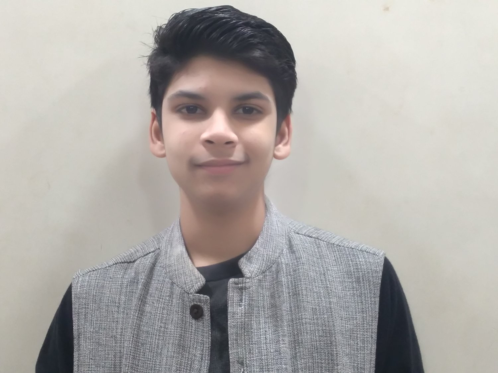

Karnav Rastogi
Age 13
Andheri West, Mumbai, India
Each One, Read One to Plant One
Inspired by nature, author and poet Karnav Rastogi joined the Tide Turner Plastic Challenge, aiming to reduce
plastic waste. He created two e-books on climate change, positively impacting students and adults. Realizing
some lacked internet access, he distributed 5,000 hard copies of his latest book, “Kartik, Mixie & Climate
Change,” initiating “Each One, Read One to Plant One.” The book includes a green pledge and a neem seed
packet, promoting tree planting. Karnav aims to distribute 10,000 copies in multiple languages, emphasizing
the role of students as champions of change to raise climate awareness.